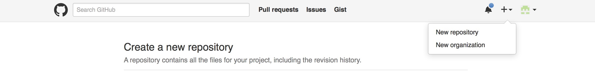

为什么使用github+pelican搭建我的博客update3_2015-11-08
背景
08年建了一个 个人博客网站，购买了hostmonster的空间和一个.info的域名，写过几篇文章，后来不了了之。空间被回收，域名过期，资料丢失，很是遗憾。所以一直有重新开一个的想法。但是想起国内建站的烦人的备案审查和国外服务器的龟速，终究还没有重建。最近有感于一些东西还是有必要记录&分享，故又萌生了重新搭建博客的想法。
现在再看博客市场，已经比以前成熟了很多。各种平台网站开的小清新博客一大堆，但在平台网站上搭博客的弊端是显而易见的：
问题
- 流量都贡献给了平台
- 难以树立个人品牌
- 话语权不在本人，而是平台
- 各种审查、删帖
- 功能无法定制
- 无法挂推广代码
- 平台广告想插就插
但也不是一无是处，至少：
- 免费
- 有可能平台帮助推广
总的来说，缺点大于优点，放弃。继而考虑自己申请域名和空间。就在15.11.2日，我申请了godaddy的.com域名(两年¥116走支付宝，有无coupon都是一样的价格，但需要在网上找coupon链接，否者自己在官网购买是无法支付的。)，申请了digitaloccean的vps，$5每月，拿个coupon可以在账户上充值$10,够用3个月了。域名就没有什么好说的了。说说digitaloccean的vps:
优点
- 管理界面清爽，相比godaddy
- 管理菜单操作简单，相比godaddy
- 菜单即使加载不出来，也有黑白无图的basic html版本可供使用
- 支付也方便，相比godaddy
（godaddy我是黑定了，哈哈）
缺点
- 官网页面加载速度慢，想快得用vpn
- 客服不到位(vps才申请了两天就被锁了,说我的主机流量异常，我还没开始搭建网站啊啊啊啊,我至今都不知道我的主机是什么原因异常，难道被黑了？腾讯、阿里云也会发邮件报告各种异常，而你却直接通知我vps被锁定？而且只能重建vps？！！！这一点是不能忍受的！！！)
刚好，就在这个时候，我想起了blahgeek，想起了他的博客设计正合我意，遂email咨询，博主好nice地告诉我，那个网站竟然是静态站，告诉我是用make生成的。
茅塞顿开！于是，我知道了：
- jekyll
- github 可以托管个人博客
- github 可以无空间、流量限制托管个人博客
然后又知道了：
- pelican
- markdown
- disqus
真是踏破铁鞋无觅处，得来全不费功夫！我一直希望找一个这样的平台：
- 可以记录和保存我写的东西
- 可以做版本管理
- 没有空间流量担忧
- 界面可以定制，不被平台干预
- 无审核等待
- 稳定，最好不要轻易被墙
- 最好免费
而github，正是这样的平台！
而对于生产静态站的工具选择，我选择了pelican，没有选jekyll。因为jekyll用的是ruby，不了解。pelican是基于python的，我对python比较感兴趣，所以就果断pelican 了。
有人说，写博客的人，要经历三个境界： 1. 在平台上的免费博客上写 2. 自己租域名空间架设博客系统写 3. 使用类似github＋静态站＋评论系统 这样的方式写
比照自己，似乎也这么走来的。曾经在几个平台，如sina,和讯，qzone等网站开通过博客，虽然没有写过几篇文章，但是也算这么走过来的。自己架网站的事情，正如上所提到的，做过两遍了。而现在，我正在做第三种，采用这种方式搭建博客的好处，就是维护成本低！
闲话休提，下面就我部署这个博客遇到的问题说说,由于这种建博客的方式相对geek一些，对于没有IT基础的盆友，是比较困难的，这里默认你都是有it底的，至少对root , python , mac/linux ,github等都是有概念的。
部署流程
注册github.com 的帐号
这里我就不多说了，直接上官方网站注册即可。而我早前已经注册过，我的github是 https://github.com/willpoon 。
 图1 ： 新建repository
 图2 ： 起名
github要求我们对用于user pages的repository，要用 ：gitusername+github.[com|io] 格式的用户名，如下图。不知道为什么，可能是为了方便管理吧。
图2 ： 起名
github要求我们对用于user pages的repository，要用 ：gitusername+github.[com|io] 格式的用户名，如下图。不知道为什么，可能是为了方便管理吧。

参考：https://pages.github.com
在你的电脑上安装python 和 pelican
请使用root 权限在电脑上安装python和pilican 。 然后使用 pelican-quickstart 来初始化一个本地目录结构，用于维护你的博客。关于你博客的所有设置，都是在生成的这个目录中维护。
问题1.执行pelican-quickstart 命令，有很多问题提示，该怎么选择，选错了怎么办？
不用担心，选项所生成的配置，都在pelicanconf.py 中保存，错了可以随时修改。 例如我的plicanconf.py 配置：
1 2 3 4 5 6 7 8 9 10 11 12 13 14 15 16 17 18 19 20 21 22 23 24 25 26 27 28 29 30 31 32 33 34 35 36 37 38 39 40 41 42 43 44 45 46 47 48 49 50 51 52 | #!/usr/bin/env python
# -*- coding: utf-8 -*- #
from __future__ import unicode_literals
AUTHOR = u'poon'
SITENAME = u'i.M.X.3'
SITEURL = ''
PATH = 'output/content'
TIMEZONE = 'Asia/Shanghai'
DEFAULT_LANG = u'zh'
# Feed generation is usually not desired when developing
FEED_ALL_ATOM = None
CATEGORY_FEED_ATOM = None
TRANSLATION_FEED_ATOM = None
AUTHOR_FEED_ATOM = None
AUTHOR_FEED_RSS = None
# Blogroll
#LINKS = (('Pelican', 'http://getpelican.com/'),
# ('Python.org', 'http://python.org/'),
# ('Jinja2', 'http://jinja.pocoo.org/'),
# ('You can modify those links in your config file', '#'),)
LINKS = (('LinkedIn', 'https://www.linkedin.com'),
('SlideShare', "http://www.slideshare.net"),
('Github', "https://www.github.com"),
('知乎', "http://www.zhihu.com"),
('Quora', "https://www.quora.com"),
('欢迎交换链接', "#"),)
SOCIAL = (('weibo', 'http://weibo.com/poooon'),
('github', 'http://github.com/willpoon'),)
# Social widget
#SOCIAL = (('You can add links in your config file', '#'),
# ('Another social link', '#'),)
DEFAULT_PAGINATION = 10
# Uncomment following line if you want document-relative URLs when developing
#RELATIVE_URLS = True
DISQUS_SITENAME = 'gitwillxxxx'
#THEME = 'bootstrap2'
THEME = 'gum'
#THEME = 'simple-bootstrap'
#THEME = 'zurb-F5-basic'
#THEME = 'Just-Read'
#THEME = 'SoMA2'
|
问题2:出于方便备份需要，我想将content目录放到output目录中，一起提交到github，是否可行？
完全没问题,你只需要修改Makefile中的INPUTDIR即可。例如我修改为：
OUTPUTDIR=$(BASEDIR)/output
INPUTDIR=$(OUTPUTDIR)/content
问题3:如果文章已经写得差不多，已经放在了content目录下，但是暂时不想发布，又不想另外找地方保存，有什么方法可以不让文章自动发布呢？
简单，把相应的md文件重命名一下扩展名就行了,比如： mv myblogpost.md myblogpost.mk.wait
问题4：如何 "一键"提交&发布博客：
imx(){
cd /Users/poon/Git/gitblog_imx3
make html
cd output/
git add .
git commit -m "commit by shell function"
git push origin master
cd ..
}
btw : gum这个模版很智能，可以对语法自动高亮！
问题5:WARNING: There are 2 variants of "oracle-biee-develop" with lang zh
CRITICAL: RuntimeError: File develop.html is to be overwritten
当有多个md文件，如果有两个以上的Slug是一样的时候，就会报这个错。slug改成不一样的就行了。
错误或不相关的disqus reveal , 如何删除？
登录disqus reveal , 删除与帖子相关的评论即可。
问题6:为何我的主题支持tag cloud ， 但是生成的网站就是无法展示
关于 tag cloud not shown 的问题，我当时也纠结了好久，后来google到一篇贴子，说pelican从3.6 开始，把tag cloud 功能作为单独的插件提供，需要安装plugin才能生成。 具体方法： 切换到 pelicanconf.py 所在的目录： 执行： git clone https://github.com/getpelican/pelican-plugins.git 获得pelican 插件目录。 编辑：pelicanconf.py,添加如下配置：
PLUGIN_PATHS = ["pelican-plugins"]
PLUGINS = ["tag_cloud"]
TAG_CLOUD_STEPS=4
TAG_CLOUD_MAX_ITEMS=100
TAG_CLOUD_SORTING = 'random'
点评
优点1: pelican 修改标题和更新文章不会影响原文章的链接引用。
当我们觉得有必要更新博文的标题和内容时，我们只需要更新 Title 和正文，然后重新发布即可，而不用担心链接发生变化，外部不能引用。
优点2: pelican 可以根据修改时间来决定博文的展示顺序。
如果我们要讲某篇博文置顶，我们只需要修改Modified:的时间，讲这个时间置为当前最新的时间，或者将来的某一个时间，文章就会置顶了。
待续...